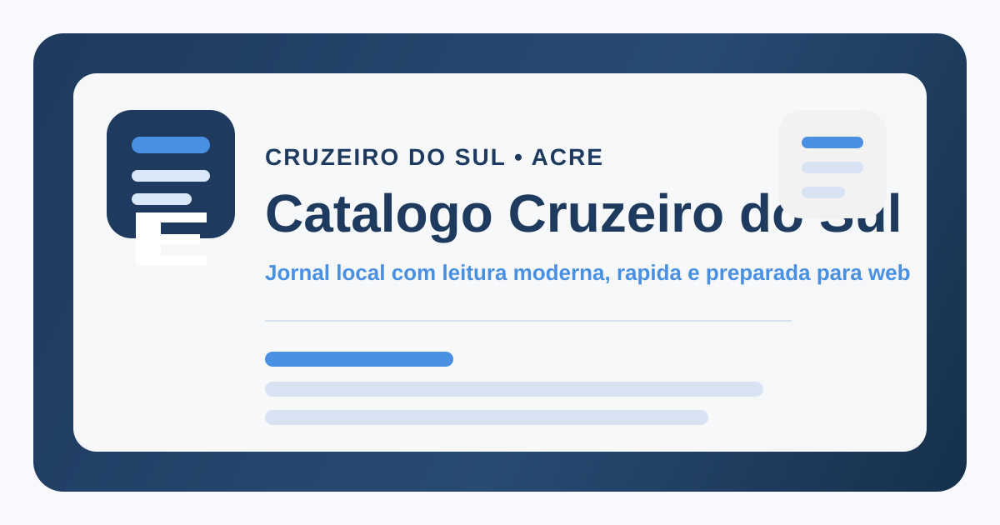

Publicidade local
Banners, chamadas, posts e presença em áreas do jornal e do catálogo para negócios de Cruzeiro do Sul e região.
Cruzeiro do Sul • Vale do Juruá • Acre
Uma página para colocar sua marca dentro do jornal local, do catálogo de serviços e das buscas por negócios em Cruzeiro do Sul.

O que vendemos
Banners, chamadas, posts e presença em áreas do jornal e do catálogo para negócios de Cruzeiro do Sul e região.
Página por módulo, texto buscável, links internos, schema e sitemap para melhorar a descoberta em buscadores.
Artes, avatares, vídeos curtos, captions, stories e materiais para WhatsApp, Instagram e Marketplace.
Landing pages, páginas de oferta, cardápios digitais, catálogos online e páginas simples para campanhas.
PubPaid, rankings, desafios e experiências interativas para marcas que querem chamar atenção sem parecer anúncio comum.
Organização de postagem, renovação de anúncio, texto de venda, chamada visual e acompanhamento dos canais.
Por que funciona
Busca e indexação
Começamos com uma página clara, um anúncio publicável e um caminho para aparecer melhor nas buscas locais.
Falar no WhatsApp